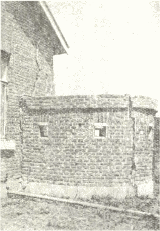
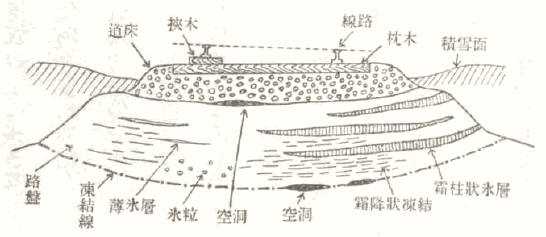
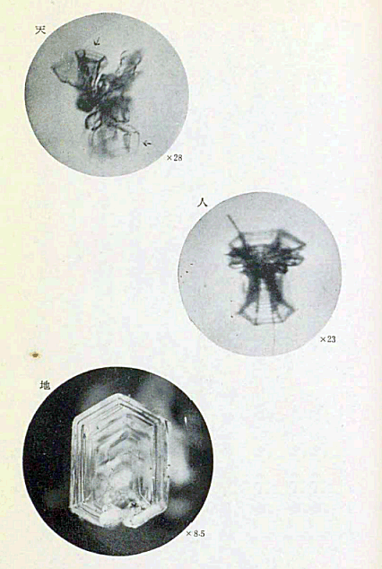
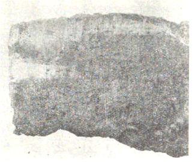
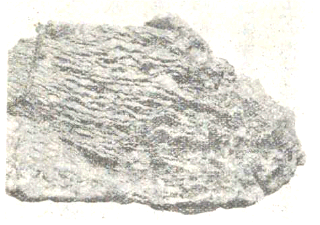

もう十年余りも昔の話になるが、私が寺田先生の助手をつとめて理研で働いていた頃のことである。先生はよく日本独特のものや、特に日本に顕著な自然現象は、一日も早く日本人の手によって究明しておくべきだということを言っておられた。
その代表的なものとしては、線香花火や金米糖、それから墨流しなどがいつも挙げられていた。現に墨流しなどは、先生が亡くなられる時まで数年来ずっとその研究が続けられていた程である。これ等は先生の随筆の中にも書かれているので、比較的有名であるが、それと同じ程度に先生は、冬毎に関東平野の赤土に立つあの美しい霜柱に興味を持たれ、その研究の重要性を力説しておられた。そして私の同期のＭ君が大学院で先生の指導を受けた時にも、霜柱の研究という題目が与えられた。
Ｍ君の研究が始められた時、先生は、この現象には土の膠質的性質が重要な役割をしているらしいから、先ず膠質物理学の色々な技術に慣れるようにという御話があった。Ｍ君の研究は途中別の事情の為に完成を見ずに中絶したのであるが、この先生の考えは、大切な点では立派に灸所を押えたものであったことが、研究の進捗につれて分って来た。
こういう話があってから二三年して、Ｍ君が目指していたのとちょうど同じ研究が、全く独立に自由学園の自然科学グループのお嬢さんたちによってなし遂げられたのであった。もっともその研究は現在までも続いているので、こういう研究にはなかなか完成ということはないのであるが、その第一期の研究結果を見られただけでも、寺田先生がひどく感心されたという話である。その研究によって霜柱の生成には、土の中に非常に細かい微粒子が混じていることが大切な要素であることが分り、寺田先生がＭ君に言われた予想がよく当っていたのである。
私は直接霜柱の研究に手をつけたことは、この数年前までは無かったのであるが、こういう話をよく傍で聞いていたので、興味は十分持っていた。ところが、今迄の話では全く趣味の問題のように見えていた霜柱が、最近になって、急に寒地における土木工学上の重大な問題として学界の表面に登場して来たのである。そして私は今更のように、寺田先生が霜柱の研究の重要性を力説して居られたことの意義を思い見るのである。
その重大問題というのは、凍上の現象なのである。北満のような厳寒地では勿論のこと、北海道くらいの寒さの所でも、冬になると土地が凍結によって著しく隆起するので、その現象を凍上と呼んでいる。この凍上現象は、寒地の鉄道建築土木工学などの広い範囲にわたって、影響するところが甚大なのである。北満地方では、家は煉瓦で出来ている関係もあって、凍上によって崩壊する家が相当あるらしい。第１図はその例であって、こういう風なことが始終起っては、凍上の現象は、建築の上だけから考えても、

第１図 凍上被害；北満某地
ところが凍上によってもっと苦しめられているものがある。それは鉄道である。線路は除雪によって地表面をいつも冷却させているので、普通の場所では積雪という良い防寒壁の為に凍上が起きない土地でも、線路だけは盛んに凍上によって隆起するのである。そして冬期間の保線の仕事というのは、殆んど凍土対策に忙殺されてしまう。
ちょっと考えると、凍上といっても、線路が一様に持ち上って凍ってくれれば、
凍上の現象は、勿論北海道に鉄道の敷かれた時からあった。そして毎年々々莫大な損害を鉄道にかけて来たのである。これに対して今まで採られて来た対策は、
冬中の人件費と、犬釘を何度となく打ち換える為による枕木の寿命の短縮と、挟木その他の資材という風に算え上げると、凍上の被害は案外大きい額に上る。北海道だけでも、その額は一冬に百五十万円に達するという話である。それだけの金を、毎年々々全く無駄にするばかりでなく、この頃のように、すべての資材が不足して来ると、この被害は単に金額だけでは論ぜられなくなる。
被害といえば、北海道などは何と言ってもまだ話が簡単であるが、北満地方では、問題はもっと深刻になる。旧の東支鉄道から北の方へ、ソ満国境に向けて引かれた沢山の線路がある。これ等が凍上によって著しく冬期の運輸が妨げられるという風なことがあれば、これは国防上からも一日も
こういう風に考えて見ると、凍上の問題が今まで余り研究の対象とされなかったのがむしろ不思議な位である。もっとも現在の日本の科学の程度では、すべての問題がそうであるのかもしれない。いずれにしても、この大切な問題である凍上の現象が、実は霜柱の本性が分れば大部分究明されるらしいことが、最近になって分って来た。単に趣味的と見られ易い霜柱の研究なども案外馬鹿には出来ないのである。
私が凍上の物理的研究に着手したのはつい最近のことで、実は昨年（昭和十四年）の暮からである。昨年の秋鉄道の方でも、時局柄人手や物資の不足に打ち勝つべく、その対策を科学的研究に求めることになり、札幌鉄道局に凍上対策委員会が出来た。そして官房研究所と北大とがそれを援けるという話になった。現時の難局を突破する方法を、精神だけの中に求めずに、科学に求めるというのは大変結構な話なので、私も喜んで、その物理的方面を担当することにした。
実際の問題についても、基礎的研究から始めて、その対策を科学的に完遂することが一番良い方法であることには、誰も異論が無い。しかし現在の日本では、そういうことを力説する人は、軍人とか政治家とかいう風な科学に直接関係していない人か、或は科学振興業者の中に多いように見える。そして実際研究に従事して居る科学者の大部分が、却って物理的な研究によってすぐ実用的価値のある結果が得られるか否かには、かなりの疑問を持っているような気がする。ちょっと反対のようであるが、実は基礎科学の実力特に現在の日本の科学の実力は、研究者自身が一番よく知っているからである。
実際北海道の奥地へ行って、荒涼たる吹雪の原野の中に立って見渡すと、細い鉄道線路が雪の中を
もっともこの仕事は余り楽ではなかった。最初に
線路は土を盛った路盤の上に砂利層のいわゆる道床があり、その上に枕木が敷いてある。掘り割った穴の中にしゃがんで、凍った土の断面を調べて行くと、場所により土質によって、凍結の状態が千差万別になっている。初めのうちは現象が無闇と複雑に見え、それに実際に手にとって見るものがどれも特徴の捉え所がないように思われて、これでは保線人夫の人に見て貰うのと大差ないという気がして心細かった。それでも二三個所見て廻っているうちに、色々な凍結型式の特徴が段々はっきり見えて来た。例えば氷層などは誰が見ても一目瞭然のように思われるが、砂利が混っていたり、土に汚れていたりすると、その薄いものなどは、初めての人には矢張り指差さないと見えないのである。
北海道の色々な辺地を廻って、八個所ばかり掘って見た。そしてそれぞれの代表的な凍結型式を調べて分類して見たら、非常に複雑に見えていた現象も、案外はっきりした機構に帰することが出来て、この研究も段々面白くなって来た。

第２図 凍上の原因をなす色々の凍結様式
砂利層から成る道床と、土壌で出来ている路盤との凍り方は、全く別物であった。砂利層は凍結直前に雨が降って凍ったような場合を除いては、原則として霜の結晶で砂利が互に凝結したものである。それで凍結の状態も余り堅固でなく、細い鉄棒でどんどん崩して調べることが出来る程度であった。
砂利の一つを採って見ると、霜の結晶が白く、その底面一杯に附着している。これは石の熱伝導度が普通の土や砂の六倍くらい大きい為に、砂利が早く冷え、其の底面へ暖かい地下の層から昇って来た水蒸気が霜の結晶となって凝縮することを示している。ところで面白いのはその結晶の形である。そっと硝子板の上に掻き落して顕微鏡の下で調べて見ると、今迄低温室の中で作って来た色々な氷の結晶の型が、殆んど洩れなく存在していることが分った。土地の気候的条件や土質などの差によって、水蒸気の供給の度合や温度がそれぞれ異るので、勿論色々な形の結晶が出来るのは当然なのである。それでも出て来る結晶が皆旧知なのが愉快であった。
その中での傑作はコップ型である。この結晶は顕微鏡の下では、水晶で作った六角形の洋酒盃のように輝いて見えるのであった。もっとも六角といっても、その一頂点が螺旋形に捲き込んでいるので、それもこの種の結晶の特徴なのである。この型の結晶はずっと前に、ウェーゲナー教授がグリーンランドの氷河の

コップ型の氷の結晶
天 雪の結晶（十勝）
地 地下の雪結晶（更別）
人 人工雪（低温室）
天 雪の結晶（十勝）
地 地下の雪結晶（更別）
人 人工雪（低温室）
コップ型の外にも、針状、
砂利層はそれで、大気の寒冷を下の土壌に伝える点において凍上に関係するが、凍上の量自身には余り関与しない。凍結によって持ち上って来るのは、主として路盤の凍上である。土の凍結の一番の特徴は、氷層が出来ることである。深川で掘った時などは、厚さ十センチに近い透明な氷板が、水平な氷の層となっていたので少々驚いたくらいである。氷層以外の部分の土は大体一ように固くなって、
それに土質によっては、薄い氷層が無数に入って、神戸牛の霜降肉のようになっている所もあり、又氷が粒状に析出していることもある。それで初めは現象が余りに複雑で、ちょっと途方に暮れた。しかし段々見ているうちに、その分析と整理とが自然に出来て来て、結局これ等の現象は霜柱の生成機構と本質的には同じものであると思われ出した。寺田先生のいわゆる「暁の空が白むように」いつの間にか、現象の本質が段々と頭の中に浮き出して見えて来たのである。こういう分り方は無理がないので、自分にも楽であり、又ひどく見当はずれになるような心配も少い。それをやるには、先ず自然の実物をよく見るのが一番の早道である。
厚い氷層はよく見ると、縦に細い線条が無数に入っていて、ちょうど霜柱が密生したような外観を呈している。それでこの種の氷層は、霜柱状氷層と呼ぶことにした。このような氷層が、夏の間水として地下にある筈はないので、凍結線の直上で、凍結によって水が下から吸い上げられ、氷となって土から分離して析出したものにちがいない。もし最適条件が長く続けば、水はどんどん下から吸い上げられ、氷となって析出するので、この霜柱状氷層はいくらでも厚くなり得る筈である。実際、後に低温室の中で、人工的に凍上を起させた時には、十センチ位の厚さの土を二十センチ以上にも凍上で引きのばすことが出来た。この場合いわば土はポンプのような役目をして、下から水を吸い上げて氷層として上へ押し出すのである。これでは凍結によって土が持ち上って来るのは当然であろう。もっとも天然の場合には、寒気の持続と共に凍結線が下降するので、下方からの水の供給が絶たれ、或る程度で氷層の生長は止むので、まだ事が済んでいるのである。

第３図 霜柱状氷層 ×１／３
こういう風に、凍結によって湿った土から氷が分離して析出するのが霜柱の特性であって、そういう意味でも既にこの氷層は地下の霜柱と言える。ところがこの氷層を薄く剥いで顕微鏡で調べてみると、縦に入っている無数の細い線条は、実は空気柱か或は気泡が垂直に並んだものなのである。そしてそれは地上の普通の霜柱の構造と完全に一致する。その上この氷層を融解直前に掘り出し、土と氷層とを剥がして見たら、土に接していた水面に亀甲状の模様が出来ていることが多かった。早速低温室内で霜柱を作って、その横断面を少し暖めて見たら、果して同じ亀甲状の模様が出て来た。それでこの氷層は地下に出来る霜柱であるということが分った。土質もその考えとよく一致するので、この氷層の出来る場所は、赤土か粘土入り火山灰のように、霜柱の出来易い土質の所であった。
粘土質の所では、霜柱状氷層は出来なくて、殆んど例外なく霜降状凍結になる。その場合の薄い氷層は一ミリないし二ミリ程度の厚さであって、これは殆んど透明な氷である。割って顕微鏡で調べて見ても、貝殻状劈開を示すだけで、前の氷層のように、明かに結晶になっている様子は見られない。しかし氷が土から分離して凍っている点は、この場合も同じことであって、一ミリや二ミリの氷層でも数が非常に多い為に、分離析出した氷の厚さは合計すれば随分の量になる。従って粘土がこの凍結をした場合にも凍上量は著しく大きいのである。

第４図 霜降状凍結 ×0.4
面白いのは、
ところが砂質の土の場合は、様子は全く変って来る。湿った砂が凍ると、砂と氷とが一様に混って固化するので、これは本当の混凝土状凍結になる。この場合氷は大抵微小な粒となって存在するので、砂質の火山灰などでは、その氷粒が肉眼で十分見える位、時には指頭大までも大きくなることがしばしばある。そういう場合は氷粒状凍結ということにした。
土の凍結様式の標本的なものを挙げればこれ位になるので、分類して見ればさほど面倒なことも無い。しかし実際の場合は、土質は色々な中間の性質のものが多く、出来た氷層も昇華によって退化し、その各段階のものがあるので、ちょっと見て直ぐ分るというわけには行かない。この中で結局凍上に一番効くのは、地下の霜柱と、粘土に見る無数の薄い氷層とである。この二つの凍結様式がどうして出来るかということが分れば凍上の本質も分るわけで、従ってその対策も出て来る筈である。それで研究は低温室の中に移る。ちょうどこの程度まで資料の整理が出来た頃、北海道にも春が来て、凍った土もとけた。それで冬の間掘り廻った色々の場所から、凍結様式の異る各種の土を取り寄せて、低温室の中で人工凍上を起させて調べることにした。
前の人工雪でこの種の研究のこつは大体分っているので、若い助手の人たちは、手軽に天然の場合を摸倣して、どんどん凍上を起させることが出来た。実験の方法は、主旨は誠に簡単である。湿った土を木箱に入れ、底を水槽に連絡して、その水を電熱で適当な温度に保てるようにして置く。それが地下水に相当するわけである。木箱は横側から冷えないように断熱して、低温室内に放置し、表面から冷して行く。すると、土質、外気温、水温などのちがいによって、それぞれ異った量の凍上をするのである。その時の各量をそれぞれ測定して、最後に凍った土を割って内部の凍結状態を見ると、ちゃんと霜柱状氷層だの、霜降状凍結だのが出来ていた。
次には凍結の進行状態、即ち各種の氷層の発生の様子やその生長の経過を見るというのが定石である。それで二重硝子筒の中に土を入れ、窓以外の部分を適当に断熱して、凍結中の氷層の出来方を連続的に見ることにした。低温室内としては比較的暖かく、零下十五度か二十度での仕事ではあったが、硝子面に霜がついたり、氷がはりついたりして、凍土の構造を詳しく見るのはなかなか困難であった。そういう些細な癖に厄介で、しかもそれを克服しなければ研究が進められないといういやな仕事も、元気な助手の人たちの御蔭でどうにか切り抜けられた。そして凍上の機構を捉える一つの手掛りが見つかった。それは凍結線が或る所まで進行すると、その下に在る土に非常に細かい
凍結線の下の軟い土に罅がはいっていたことは、実は天然の凍上でも一二度見たのであるが、その時は余り重大なこととも気が付かなかった。しかしこの実験の結果から考えると、割れ目の問題が凍上の謎を解く一つの鍵なのである。
割れ目の出来る機構は後廻しとして、ここで割れ目に氷が析出する模様を考えて見る。先に凍結線の下で割れ目が出来ると言ったが、凍結線といっても湿った土は零度で判然と凍るものではなく、氷点降下が相当にあるので、硬い凍った所から軟い未凍結の部分への移りかわりにかなりの幅がある。次の実験で分ったことであるが、零度の線のかなり下でこの割れ目が出来るのである。その時下からの水の供給が豊富で土質が霜柱の生成に適していると、水温による熱の補給と凍結で発生する潜熱との為に、凍結線は殆んど下降せずに氷層は生長を続ける。その時は厚い霜柱状氷層になる。今まで地下の霜柱といっていたのであるが、割れ目に出来るとすれば、空気と土との境界面に発生するので、結局普通の霜柱と本質的にはかわらないものになる。粘土のように水の流通の悪いものの場合や、或は気温の急激な低下のある時には、凍結線が速く下降して、下からの水の補給を切る。それで氷層は薄いままに止り霜降状凍結になる。
このように解釈すると、現象の説明が一応出来たように見える。しかしこの説明では、実はまだ随筆であって論文にはなっていないのである。思い付きと研究とは或る場合には外形が非常に似ているが、本質的には重大な差がある。この場合、今の思い付きを研究にするには、実際に外気温やその他の条件を色々に変えて、厚薄様々の氷層を三層でも五層でも註文通りに自由に作って見せるのが一番の早道である。その為に温度を自由に変えられる恒温箱を低温室内に設置して、その中で凍上の実験をすることにした。まだ註文通り自由にとは行かないが、大体希望の凍結様式を起さすことが出来るようになった。今少し上手になったら、何でも「註文に応じて」作れるようになるであろう。
このような方向に研究が進行して来ると、凍上が広い意味での霜柱に原因するという私たちの考えは、段々と形を成して来たように見える。しかし凍上には、全く別な考え方もあるのであって、それは挫屈（buckling）の説である。水が凍ると約一割体積を増すことはよく知られている。それで湿った土が凍った場合にも体積が増すと考えられるので、その為に横に圧力が働いて或る部分が持ち上る、即ち挫屈の為に凍上が起るという考えである。その方も一応研究しておく必要があるので、果して十分水を含んだ土が凍る時に体積を増すかどうかを調べて見た。上の方へ伸びることは凍上で分っているが、左右の方は分らない。それで少し大きい木箱に湿土を入れ、周囲を断熱しておいて、左右の側に小さい板を埋め込み、その動きを光学的に拡大して測定して見た。ところが予期に反して、土は凍結によって上方へは伸びるけれども、左右には縮むことが分ったのである。これは重力の問題ではなくて、寒気の侵入方向にだけ伸びるのである。そういえば霜柱が上方へ伸びるというのも、あれは寒気の侵入方向に伸びるのであって、湿った土を球にして吊しておけば、四方八方に霜柱が伸び出て、栗の毬のような形になるのである。そう考えると、凍上が起きるというのも、氷層が分離して析出するために、外観上上方へ伸びるように見えるので、土だけ見たなら矢張り縮んでいるのかもしれない。
八月満洲へ凍上の資料を集める為に行って見たら、北満の都市で凍下という現象があって困っているという話を聞いて思わず苦笑をした。道路を鋪装したら、この凍下が起きてすっかり鋪装が壊されてしまったのだそうである。この現象なども、鋪装による水分遮断の為に凍上が起きず、土の収縮だけが生じたものとすれば説明が出来る。凍下は冗談事ではなく、北満地方の飛行場に大規模な滑走路を作る時などは真剣な問題になるであろう。
この土の凍結による収縮の研究の副産物として、大切な事が一つ見付かった。それは同時に土中の温度を測って見たら、この収縮は土温が摂氏二度ないし摂氏三度迄下った時から急激に起り始まることが知られたのである。それで凍結線が或る所まで来ると、その少し下の層が収縮を始めるので、それがちょうど前に言った割れ目の出来る場所なのである。先ずこれで割れ目の出来る原因も土の収縮の為として一応は解決されたことになる。
これだけの経過を経て、問題は再びもとに戻ることになる。それは以上の研究によって、凍上の複雑極まる現象が、結局霜柱が何故土から分離して伸び出るかという問題に帰せられることになったからである。ここまで来れば、この非常時局に霜柱の研究でもあるまいと言う人も無いであろう。
もっとも以上の話は、まだ凍上の研究に手を着けて一年しか経たないのであるから、今後の研究によってまた少し話が変って来るかもしれない。もし一年の間の仕事としては相当の進捗があったとしたら、それは少し前から霜柱の研究などという閑研究に興味をもっていた御蔭である。もしこの話が科学統制などをやかましく論じて居られる方々に、幾分でも参考になる点があれば望外の喜びである。
（昭和十五年十月）